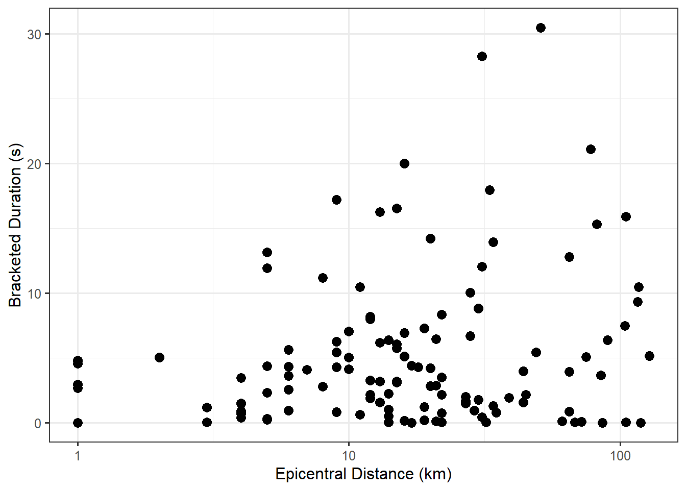
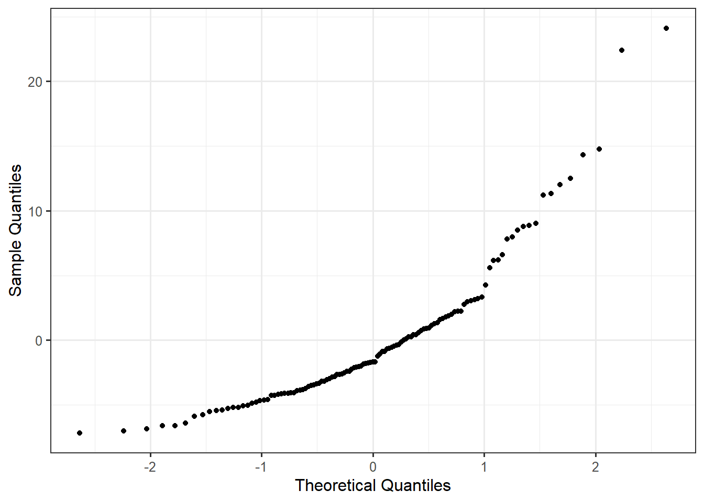
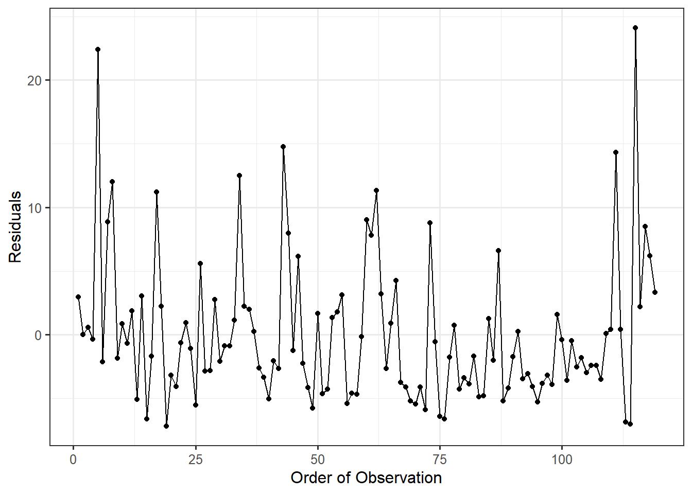
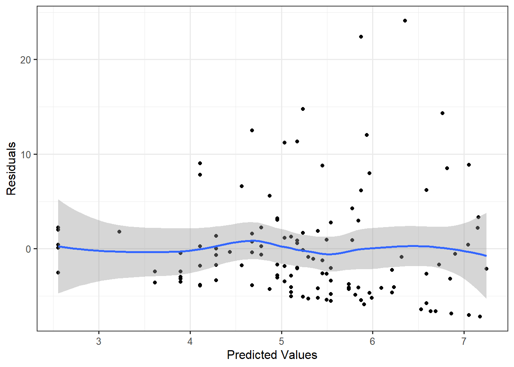
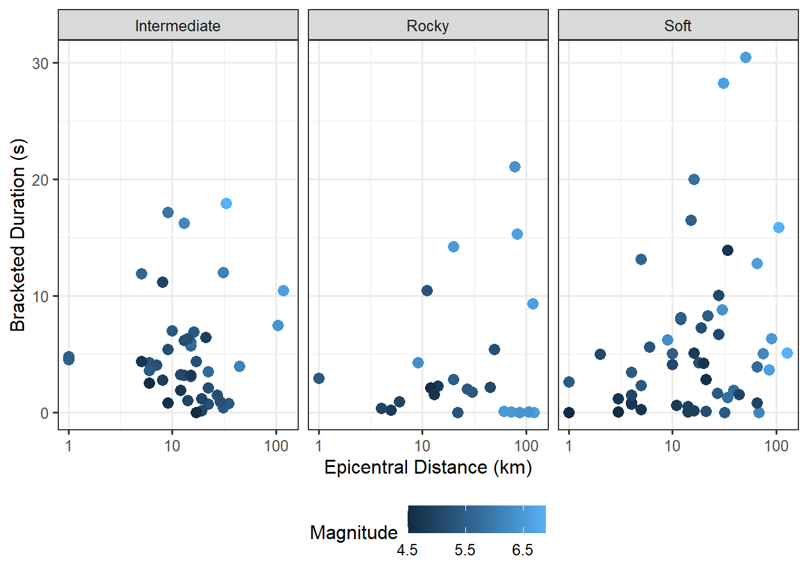

22 Putting it All Together
For the Seismic Activity Case Study, consider the following question:
Overall, does the average bracketed duration at a location depend on the distance a location is from the center of an earthquake?
While we have touched on this question in previous chapters, we investigate this question more fully in this chapter.
22.1 Graphical Summary
Before developing a statistical model to address our question, we summarize the data graphically. The question suggests the bracketed duration is the response variable and the epicentral distance is the predictor. Figure 22.1 illustrates the relationship between the bracketed duration and the epicentral distance. We note that the axis for the epicentral distance takes logarithmic steps to better illustrate the relationship. That is, moving from 1 to 10 kilometers has roughly the same effect as moving from 10 to 100 kilometers from the earthquake.
22.2 Development of Statistical Model
In order to address our primary question of interest, we must develop a statistical model which explains the data generating process and embeds our question of interest in terms of the parameters of the model. Based on the question of interest, and our observations in the graphical exploration above, our model explaining the generation of the bracketed duration should depend on the epicentral distance. Further, this relationship should be on a logarithmic scale to account for the “stretched” scale in Figure 22.1.
At first, it may seem that the logarithmic scale prevents our use of the “linear” model we discussed in this unit, but the model is flexible enough to accommodate this development. We propose the following model for the data generating process:
\[(\text{Bracketed Duration})_i = \beta_0 + \beta_1 \log_{10}(\text{Epicentral Distance})_i + \varepsilon_i. \tag{22.1}\]
Notice that instead of just the epicentral distance, our predictor is the base-10 logarithm of the epicentral distance. This transformed variable enters the model just as any other predictor. In addition to modeling the deterministic portion of the data generating process, we must also place conditions on the stochastic portion in order to make inference. We consider the conditions of the classical regression model:
- The error in the bracketed duration is 0, on average for all epicentral distances; that is, the model for the deterministic portion is correctly specified.
- The error in the bracketed duration for one location is independent of the error in the bracketed duration for any other location.
- The variability of the error in the bracketed duration is the same for all locations regardless of the epicentral distance.
- The error in the bracketed duration follows a Normal distribution.
Before imposing these conditions, however, we should assess them.
22.3 Assessment of Conditions
Before making inference regarding our question of interest, we should determine if our data is consistent with the conditions on the error term we have specified. Figure 22.2 is a probability plot of the residuals used to assess whether the data is consistent with the Normality condition.

The plot reveals some departure from the linear relationship we would expect if the errors followed a Normal distribution. It seems unreasonable to impose the Normality condition.
Figure 22.3 is a plot of the residuals for the observations in the order in which they were collected. Since the data was collected over time, this plot could reveal potential patterns among the residuals which suggest a departure from independence among the errors. As there are no trends in either the location or spread of the residuals, the data is consistent with the independence conditions.

Figure 22.4 is a plot of the residuals against the predicted values from the deterministic portion of the model. There are no obvious trends in the location of the residuals; that is, the residuals balance out around 0 for all predicted values. Therefore, we are willing to the data is consistent with the condition that the mean of the errors is 0 for each combination of the predictors. We note that while the points balance out around 0 (as indicated by a smoother that remains near 0), they tend to have a larger range on the positive side compared to the negative side; this relates back the observation we made earlier that the residuals do not behave like a sample from a Normal distribution.
We also note that the spread of the residuals is larger on the right side of the graphic compared to the left side. As the predicted values increase, the spread of the residuals also increases. This suggests that for larger bracketed durations, the model is not as precise. Therefore, we are not willing to impose the constant variance condition.

Examining the residuals, we determined that the data is consistent with the following two conditions:
- The error in the bracketed duration for one location is independent of the error in the bracketed duration for any other location.
- The error in the bracketed duration is 0, on average, for all epicentral distances; that is, the deterministic portion of the model for the data generating process is correctly specified.
Since we are only willing to assume these two conditions, we will use an empirical model (bootstrap procedure) for the sampling distribution of the least squares estimates.
22.4 Summary of Model Fit
The parameters in our model are estimated via the method of least squares. The variability in these estimates is quantified using an empirical model of the sampling distribution based on 5000 bootstrap replications. Table 22.1 summarizes the estimates for the parameters in Equation 22.1.
| Term | Estimate | Standard Error | 95% Lower CI | 95% Upper CI |
|---|---|---|---|---|
| (Intercept) | 2.553 | 1.031 | 0.464 | 4.561 |
| log10(Epicentral Distance) | 2.226 | 0.985 | 0.347 | 4.248 |
The results suggests that for each 10-fold increase in the number of kilometers a location is from the epicenter of an earthquake (1-unit increase in the base-10 logarithm), the bracketed duration increases between 0.347 and 4.248 seconds, on average. This result is counter-intuitive; it suggests that the further a location is from an earthquake, the longer it is subjected to major ground motion. First, remember that this is data from an observational study; so, the result is not suggesting a causal relationship. Indeed, confounding is playing a role here. Figure 22.5 examines the relationship between the bracketed duration and the epicentral distance in addition to the magnitude of the earthquake and the soil conditions of the location. While it is somewhat difficult to see, note that earthquakes with the largest magnitudes also tended to be recorded further away. While we would need to confirm with a discipline expert, it suggests that the major fault line is approximately 100 kilometers away from the Greek observation stations. As a result, the recording locations in the study experienced the largest amount of major motion when these large quakes occurred. A more robust analysis using the general form of the linear regression model of the previous chapter would reveal that after accounting for these additional terms, the data is consistent with decreases in the bracketed durations, on average, for locations further from the center of an earthquake.

It is important to always place our analyses in the context of the problem and consult with discipline experts. This can sometimes reveal shortcomings in the proposed model for the data generating process. Remember, statistical analyses are not a crystal ball; they reveal potential patterns, but only those that we incorporate into our model for the data generating process.